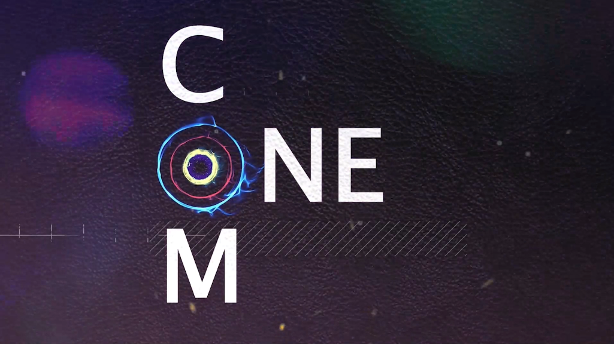
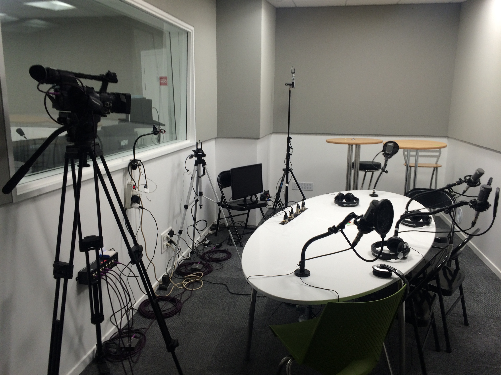
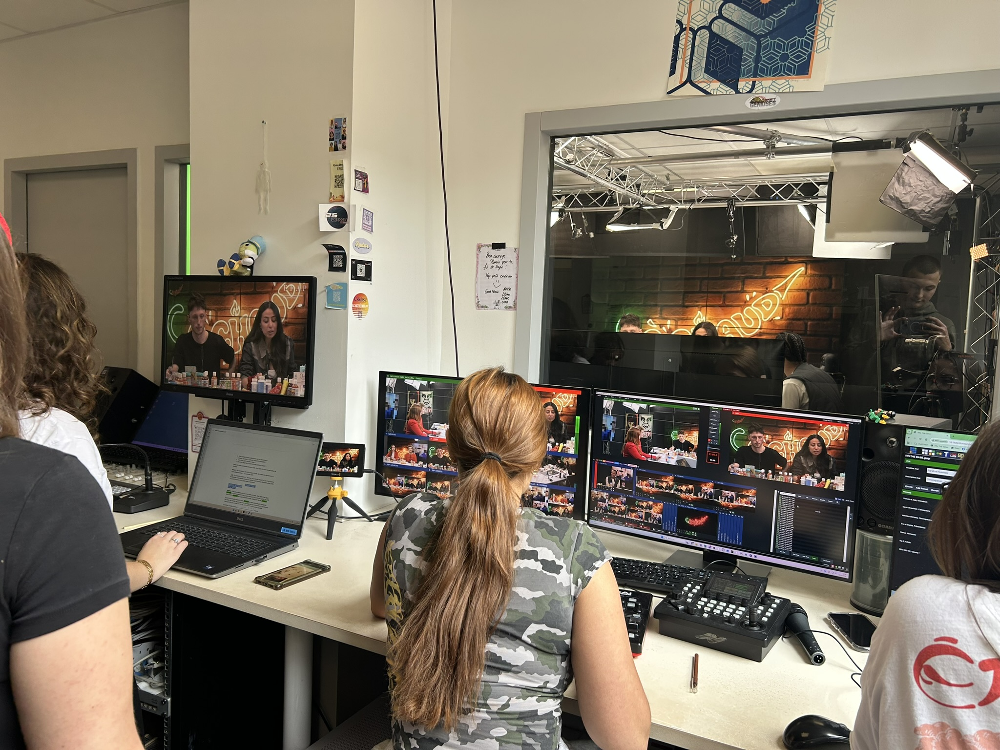
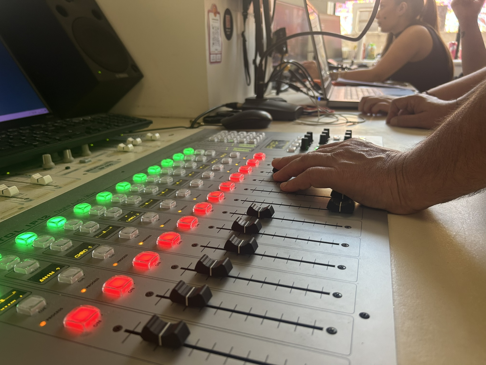
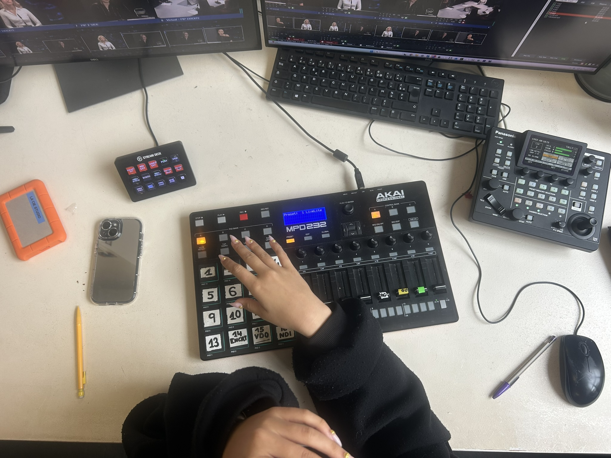
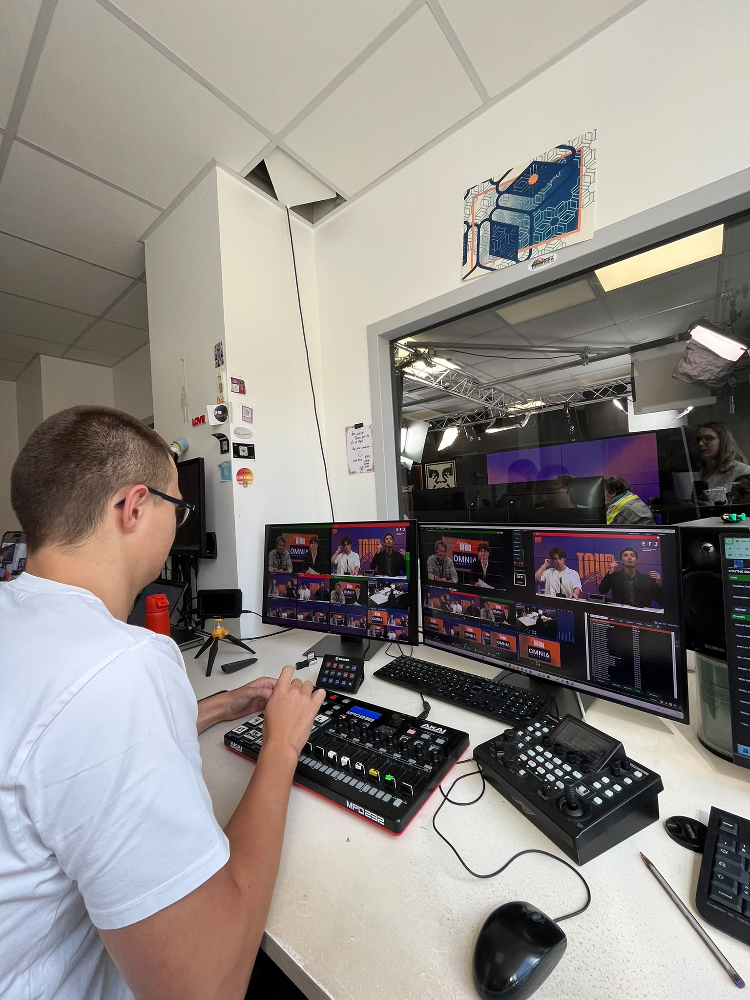
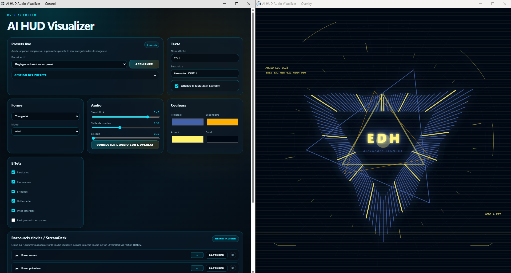

Stage en Assistant de production chez EDH Groupe
Rapport de stage de mai à juin 2026 au sein du Studio Raspail en tant qu'assistant de production pour les écoles EFAP, EICAR, EFJ ou encore BRASSART du groupe EDH à Paris.

Qu'est ce que ComOne' ?
Lors de mon stage, j’ai travaillé pour ComOne’ Média, le média du groupe d’écoles EDH, auquel appartiennent notamment l’EFJ et l’EFAP. Le média est basé dans le studio du campus Raspail. C'est un espace mis à disposition des étudiants dans le cadre de leurs cours de face caméra, d’ateliers radio et de séances de media training.
Le studio a été créé en 2009 par Étienne Pozzo, ingénieur du son de profession. À l’origine, ce lieu avait pour objectif de former les étudiants aux formats radio. Au fil des années, il s’est développé pour devenir un véritable espace de production audiovisuelle, permettant aujourd’hui la réalisation d’émissions dans des conditions professionnelles.


Le studio en 2016 puis aujourd'hui, dix ans plus tard, à droite
Pendant l’année, ComOne’ Média accompagne la production de plus de 70 émissions étudiantes diffusées en direct sur Twitch. Ces émissions peuvent également mobiliser de nombreux partenaires, parmi lesquels Starbucks, Asics ou encore Red Bull, ainsi que des invités issus de différents domaines. Cet environnement m’a permis de découvrir le fonctionnement concret d’une chaîne de production audiovisuelle, depuis la préparation d’un projet jusqu’à sa diffusion en direct.
La chaîne ComOne sur Twitch !Mon rôle, en tant qu’assistant de production, était d’accompagner les étudiants dans la création de leur émission de A à Z. Cela pouvait aller de la communication sur les réseaux sociaux à la réalisation du direct, en passant par le mixage audio, la gestion vidéo ou encore l’organisation générale du plateau. J’ai ainsi pu occuper différents postes, notamment celui de mixage son et celui de réalisation vidéo.
Être assistant de production demande également une grande polyvalence. Il faut savoir être un véritable couteau suisse : organiser des réunions, suivre les rendus, préparer ou installer du matériel, gérer les imprévus et répondre à des demandes très variées. Ce poste exige donc une forte capacité d’adaptation, d’autant plus que le rythme de travail est souvent soutenu et que l’emploi du temps fonctionne à flux tendu.
Dans le détail ca veut dire quoi être assistant de production ?
Nos missions étaient très variées. Elles commençaient par l’accueil des étudiants et la préparation du matériel nécessaire aux séances : installation des lumières, réglage des caméras, mise en route des ordinateurs et vérification générale du studio.
Une partie de mon travail concernait aussi la gestion du son. Je devais mixer les différentes entrées audio, équilibrer les niveaux, régler la sensibilité des micros, gérer les fonds musicaux et lancer les jingles au bon moment. Ces missions m’ont permis de développer mes compétences techniques et de mieux comprendre les exigences d’une production audiovisuelle en conditions réelles avant d’apprendre à gérer l’image.

Mais la partie la plus importante de ce stage a été ma formation au rôle d’opérateur vMix. Cette mission consistait à gérer les différentes entrées vidéo, à effectuer les changements d’encarts, à lancer les vidéos et à modifier les décors de plateau depuis un pad tactile et un Stream Deck. Ce travail correspond à ce que l’on appelle « faire la réalisation » d’une émission en direct tandis qu’avant je mixais(le son).


À côté du pad tactile, je disposais également d’une télécommande de caméra me permettant de contrôler les trois caméras tourelles du studio. Le matériel du studio est le même que sur les plateaux TV ainsi je me suis familiariser avec ces équipements.
Ce stage m’a particulièrement plu, car il m’a permis d’allier la technique et le contact humain. En tant qu’assistants de production, nous étions souvent les premiers repères des étudiants. Ils venaient nous voir pour poser des questions sur les dépôts de rendus, l’organisation de leurs émissions ou les attentes techniques liées à leurs projets.
Nous avions également un rôle de soutien dans la coordination des équipes. Les tensions ou les difficultés d’organisation étaient fréquentes au sein des groupes. Dans ces moments-là, nous devions aider à calmer les situations, encourager les étudiants et les motiver afin que leur projet puisse avancer dans de bonnes conditions.
Enfin, j’ai aussi participé à des missions complémentaires, comme la rédaction de documents pédagogiques destinés aux futurs élèves, ainsi que le montage de best-of d’émissions ou encore participer aux notations et faire l’appel. Ces différentes expériences m’ont permis de mieux comprendre le fonctionnement global d’un studio de production mais aussi à accompagner les étudiants dans leurs formations.
Un événement que je garde en tête ?
Le premier événement marquant de mon stage est arrivé au bout d’une semaine. Des étudiants sont venus au studio avec une demande nouvelle : réaliser une émission co-présentée avec une intelligence artificielle.
À ce moment-là, je connaissais encore peu les logiciels et la gestion des entrées et sorties audio et vidéo me paraissait très complexe. Comme j’aime l’informatique et que je voulais me montrer volontaire, Étienne m’a associé à ce projet.

J’ai alors fait des recherches, réalisé des schémas et programmé une interface permettant de visualiser l’IA lorsqu’elle parlait. Cette expérience m’a permis de mettre les mains dans le cambouis, de mieux comprendre la complexité d’une production professionnelle et d’être force de proposition face à un problème concret.
Comment parler d’événements marquants sans évoquer chacun des lives auxquels j’ai participé à la réalisation ? L’ambiance électrique du studio, les élèves en ébullition, les invités parfois inattendus : des chanteurs de mon enfance du générique de Pokémon à Jean-Luc Reichmann; ont rendu ces journées plus qu’intenses, mais ô combien satisfaisantes.
À regarder Jean-Luc Reichmann en live sur Tour de Piste (réaliser à l'image par moi)En bref, ce stage a été une superbe occasion de découvrir le monde professionnel et ses exigences au sein d’un média. Le cadre éducatif de la formation m’a permis d’apprendre à toucher à tout, ce qui n’aurait pas forcément été possible ailleurs, mais aussi d’avoir un quotidien au contact des autres et de me sentir épanoui.